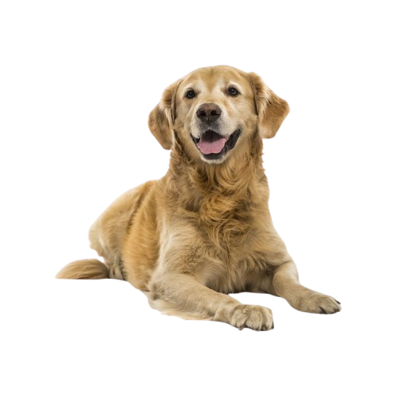

Todo grande impacto começa com um problema real.
Diariamente, organizações de proteção animal dedicam tempo e esforço para resgatar, cuidar e encontrar um lar para animais abandonados. Entretanto, muitas dessas instituições ainda enfrentam dificuldades na organização das informações devido ao uso de planilhas, anotações e processos manuais.
Foi observando esse cenário que surgiu a ideia do nosso projeto.
Desenvolvemos uma plataforma que utiliza a tecnologia para simplificar a gestão das ONGs, oferecendo uma solução intuitiva, segura e centralizada para administrar todo o processo de adoção.
Nosso objetivo é contribuir para que as organizações tenham mais eficiência em suas atividades e possam dedicar ainda mais atenção ao bem-estar animal.